건설기계설비기사 (2017-08-26 기출문제)
1과목: 재료역학
1. 그림과 같은 구조물에 C점과 D점에 각각 20kN, 40kN의 하중이 아랫방향으로 작용할 때 상g단의 반력 Ra는 약 몇 kN인가?
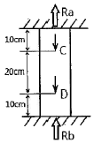
- 25
- 30
- 20
- 35
(정답률: 21%)

2. 철도용 레일의 양단을 고정한 후 온도가 20℃에서 5℃로 내려가면 발생하는 열응력은 약 몇 MPa인가? (단, 레일재료의 열팽창계수 α＝0.000012/℃이고, 균일한 온도 변화를 가지며, 탄성계수 E＝210GPa이다.)
- 50.4
- 37.8
- 31.2
- 28.0
(정답률: 42%)
3. 그림과 같은 평면응력상태에서 σx＝300MPa, σy＝200MPa이 작용하고 있을 때 재료 내에 생기는 최대전단응력(τmax)의 크기와 그 방향(θ)은?
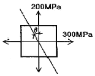
- τmax＝300MPa, θ＝90°
- τmax＝200MPa, θ＝0°
- τmax＝100MPa, θ＝22.5°
- τmax＝50MPa, θ＝45°
(정답률: 40%)
4. 안지름이 25mm, 바깥지름이 30mm인 중공 강철관에 10kN의 축인장 하중을 가할 때 인장응력은 몇 MPa인가?
- 14.2
- 20.3
- 46.3
- 145.5
(정답률: 39%)
5. 그림과 같이 반지름이 5cm인 원형 단면을 갖는 ㄱ자 프레임의 A점 단면의 수직응력(σ)은 약 몇 MPa인가?
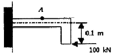
- 79.1
- 89.1
- 99.1
- 109.1
(정답률: 20%)
6. 비중량 γ＝7.85×104N/m3인 강선을 연직으로 매달려고 할 때 자중에 의해서 견딜 수 있는 최대길이는 약 몇 m인가? (단, 강선의 허용인장응력은 12MPa이다.)
- 152
- 228
- 3⑤
- 382
(정답률: 29%)
7. 그림과 같이 일단고정 타단자유단인 기둥의 좌굴에 대한 임계하중(buckling load)은 약 몇 kN인가? (단, 기둥의 세로탄성계수는 300GPa이고 단면(폭×높이)은 2cm×2cm의 정사각형이다. 오일러의 좌굴하중을 적용한다.)
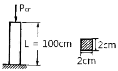
- 34
- 20.2
- 9.8
- 5.8
(정답률: 36%)
8. 지름 50mm의 속이 찬 환봉축이 1228N·m의 비틀림 모멘트를 받을 때 이 축에 생기는 최대비틀림 응력은 약 몇 MPa인가?
- 20
- 30
- 40
- 50
(정답률: 43%)
9. 그림과 같이 재료와 단면이 같고 길이가 서로 다른 강봉에 지지되어 있는 강체 보에 하중을 가했을 때 A, B에서의 변위의 비 δA/δB는?
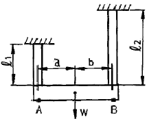
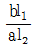
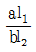
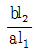
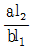
(정답률: 29%)
10. 그림과 같은 외팔보에서 허용굽힘응력은 50kN/cm2이라 할 때, 최대 하중 P는 약 몇 kN인가? (단, 보의 단면은 10cm×10cm이다.)
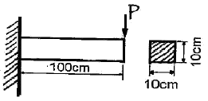
- 110.5
- 100.0
- 95.6
- 83.3
(정답률: 40%)
11. 그림과 같은 외팔보의 C점에 100kN의 하중이 걸릴 때 B점의 처짐량은 약 몇 cm인가? (단, 이 보의 굽힘강성(EI)는 10kN·m2이다.)
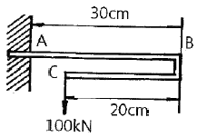
- 0
- 0.09
- 0.16
- 0.64
(정답률: 18%)
12. 그림과 같이 선형적으로 증가하는 불균일 분포 하중을 받고 있는 단순보의 전단력선도로 적합한 것은?
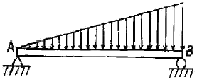
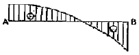
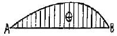
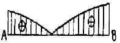
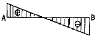
(정답률: 32%)
13. 축에 발생하는 전단응력은 τ, 축에 가해진 비틀림 모멘트는 T라 할 때 축 지름 d를 나타내는 식은?
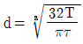
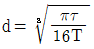
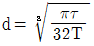
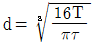
(정답률: 42%)
14. 단면계수가 0.01m3인 사각형 단면의 양단 고정보가 2m의 길이를 가지고 있다. 중앙에 최대 몇 kN의 집중하중을 가할 수 있는가? (단, 재료의 허용굽힘응력은 80MPa이다.)
- 800
- 1600
- 2400
- 3200
(정답률: 28%)
15. 단면 지름이 3cm인 환봉이 25kN의 전단하중을 받아서 0.00075rad의 전단변형률을 발생시켰다. 이때 재료의 세로탄성계수는 약 몇 GPa인가? (단, 이 재료의 포아송 비는 0.3이다.)
- 75.5
- 94.4
- 122.6
- 157.2
(정답률: 27%)
16. 지름 2cm, 길이 50cm인 원형단면의 외팔보 자유단에 수직하중 P＝1.5kN이 작용할때, 하중 P로 인해 생기는 보속의 최대전단응력은 약 몇 MPa인가?
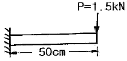
- 3.19
- 6.37
- 12.74
- 15.94
(정답률: 35%)
17. 다음 그림과 같이 2가지 재료로 이루어진 길이 L의 환봉이 있다. 이 봉에 비틀림 모멘트 T가 작용할 때 이 환봉은 몇 rad로 비틀림이 발생하는가? (단, 재질 a의 가로탄성계수는 Ga, 재질 a의 극관성모멘트는 Ipa이고, 재질 b의 가로탄성계수는 Gb, 재질 b의 극관성모멘트는 Ipb이다.)
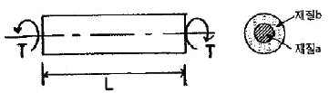
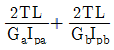
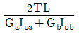
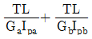
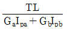
(정답률: 22%)
18. 다음 부정정보에서 B점에서의 반력은? (단, 보의 굽힘강성 EI는 일정하다.)
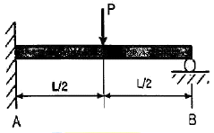
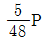
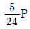
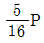
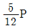
(정답률: 43%)
19. 길이 l의 외팔보의 전 길이에 걸쳐서 w의 등분포 하중이 작용할 때 최대 굽힘모멘트(Mmax)의 값은?
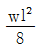
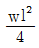
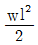
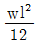
(정답률: 21%)
20. 폭과 높이가 80mm인 정사각형 단면의 회전 반지름(radius of gyration)은 약 몇 m인가?
- 0.034
- 0.046
- 0.023
- 0.017
(정답률: 35%)
2과목: 기계열역학
21. 다음 중 이론적인 카르노 사이클 과정(순서)을 옳게 나타낸 것은? (단, 모든 사이클은 가역 사이클이다.)
- 단열압축 → 정적가열 → 단열팽창 → 정적방열
- 단열압축 → 단열팽창 → 정적가열 → 정적방열
- 등온팽창 → 등온압축 → 단열팽창 → 단열압축
- 등온팽창 → 단열팽창 → 등온압축 → 단열압축
(정답률: 30%)
22. 랭킨 사이클로 작동되는 증기동력 발전소에서 20MPa, 45℃의 물이 보일러에 공급되고, 응축기 출구에서의 온도는 20℃, 압력은 2.339kPa이다. 이 때 급수펌프에서 수행하는 단위 질량당 일은 약 몇 kJ/kg인가? (단, 20℃에서 포화액 비체적은 0.001002m3/kg, 포화증기 비체적은 57.79m3/kg이며, 급수펌프에서는 등엔트로피 과정으로 변화한다고 가정한다.)
- 0.4681
- 20.04
- 27.14
- 1020.6
(정답률: 22%)
23. 1kg의 기체로 구성되는 밀폐계가 50kJ의 열을 받아 15kJ의 일을 했을 때 내부에너지 변화량은 얼마인가? (단, 운동에너지의 변화량은 무시한다.)
- 65kJ
- 35kJ
- 26kJ
- 15kJ
(정답률: 37%)
24. 초기에 온도 T, 압력 P 상태의 기체(질량 m)가 들어있는 견고한 용기에 같은 기체를 추가로 주입하여 최종적으로 질량 3m, 온도 2T 상태가 되었다. 이 때 최종 상태에서의 압력은? (단, 기체는 이상기체이고, 온도는 절대온도를 나타낸다.)
- 6
- 3
- 2
- 3P/2
(정답률: 32%)
25. 다음 중 강도성 상태량(intensive property)에 속하는 것은?
- 온도
- 체적
- 질량
- 내부에너지
(정답률: 34%)
26. 그림과 같이 A, B 두 종류의 기체가 한 용기 안에서 박막으로 분리되어 있다. A의 체적은 0.1m3, 질량 2kg이고, B의 체적은 0.4m3, 밀도는 1kg/m3이다. 박막이 파열되고 난 후에 평형에 도달하였을 때 기체 혼합물의 밀도는 약 몇 kg/m3인가?
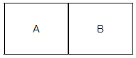
- 4.8
- 6.0
- 7.2
- 8.4
(정답률: 38%)
27. 체적이 0.1m3인 용기 안에 압력 1MPa, 온도 250℃의 공기가 들어있다. 정적과정을 거쳐 압력이 0.35MPa로 될 때 이 용기에서 일어난 열전달 과정으로 옳은 것은? (단, 공기의 기체상수는 0.287kJ/(kg·K), 정압비열은 1.0035kJ/(kg·K), 정적비열은 0.7165kJ/(kg·K)이다.)
- 약 162kJ의 열이 용기에서 나간다.
- 약 162kJ의 열이 용기로 들어간다.
- 약 227kJ의 열이 용기에서 나간다.
- 약 227kJ의 열이 용기로 들어간다.
(정답률: 23%)
28. 출력 15kW의 디젤기관에서 마찰 손실이 그 출력의 15%일 때 그 마찰 손실에 의해서 시간당 발생하는 열량은 약 몇 kJ인가?
- 2.25
- 25
- 810
- 8100
(정답률: 30%)
29. 다음 중 냉매의 구부조건으로 틀린 것은?
- 증발 압력이 대기압보다 낮을 것
- 응축 압력이 높지 않을 것
- 비열비가 작을 것
- 증발열이 클 것
(정답률: 15%)
30. 가스터빈으로 구동되는 동력 발전소의 출력이 10MW이고 열효율이 25%라고 한다. 연료의 발열량이 45000kJ/kg이라면 시간당 공급해야 할 연료량은 약 몇 kg/h인가?
- 3200
- 6400
- 8320
- 12800
(정답률: 36%)
31. 어느 발명가가 바닷물로부터 매시간 1800kJ의 열량을 공급받아 0.5kW 출력의 열기관을 만들었다고 주장한다면, 이 사실은 열역학 제 몇 법칙에 위반 되겠는가?
- 제 0법칙
- 제 1법칙
- 제 2법칙
- 제 3법칙
(정답률: 35%)
32. 체적이 0.5m3, 온도가 80℃인 밀폐 압력용기 속에 이상기체가 들어 있다. 이 기체의 분자량이 24이고, 질량이 10kg이라면 용기속의 압력은 약 몇 kPa인가?
- 1845.4
- 2446.9
- 3169.2
- 3885.7
(정답률: 37%)
33. 3kg의 공기가 들어있는 실린더가 있다. 이 공기가 200kPa, 10℃인 상태에서 600kPa이 될 때까지 압축할 때 공기가 한 일은 약 몇 kJ인가? (단, 이 과정은 폴리트로프 변화로서 폴리트로프 지수는 1.3이다. 또한 공기의 기체상수는 0.287kJ/(kg·K)이다.)
- －285
- -235
- 13
- 125
(정답률: 30%)
34. 1kg의 이상기체가 압력 100kPa, 온도 20℃의 상태에서 압력 200kPa, 온도 100℃의 상태로 변화하였다면 체적은 어떻게 되는가? (단, 변화전 체적을 V라고 한다.)
- 0.65V
- 1.57V
- 3.64V
- 4.57V
(정답률: 34%)
35. 어떤 냉장고의 소비전력이 2kW이고, 이 냉장고의 응축기에서 방열되는 열량이 5kW라면, 냉장고의 성적계수는 얼마인가? (단, 이론적인 증기압축 냉동사이클로 운전된다고 가정한다.)
- 0.4
- 1.0
- 1.5
- 2.5
(정답률: 11%)
36. 이론적인 카르노 열기관의 효율(η)을 구하는 식으로 옳은 것은? (단, 고열원의 절대온도는 TH, 열원의 절대온도는 TL이다.)
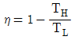
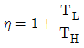
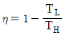
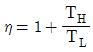
(정답률: 43%)
37. 그림과 같이 다수의 추를 올려놓은 피스톤이 설치된 실린더 안에 가스가 들어 있다. 이 때 가스의 최초압력이 300kPa이고, 초기 체적은 0.⑤m3이다. 여기에 열을 가하여 피스톤을 상승시킴과 동시에 피스톤 추를 덜어내어 가스온도를 일정하게 유지하여 실린더 내부의 체적을 증가시킬 경우 이 과정에서 가스가 한 일은 약 몇 kJ인가? (단, 이상기체 모델로 간주하고, 상승 후의 체적은 0.2m3이다.)
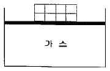
- 10.79kJ
- 15.79kJ
- 20.79kJ
- 25.79kJ
(정답률: 29%)
38. 어떤 물질 1kg이 20℃에서 30℃로 되기 위해 필요한 열량은 약 몇 kJ 인가? (단, 비열(C, kJ/(kg·K))은 온도에 대한 함수로서 C=3.594＋0.0372T이며, 여기서 온도(T)의 단위는 K이다.)
- 4
- 24
- 45
- 147
(정답률: 23%)
39. 물 2L를 1kW의 전열기를 사용하여 20℃로부터 100℃까지 가열하는데 소용되는 시간은 약 몇 분(min)인가? (단, 전열기 열량의 50%가 물을 가열하는데 유효하게 사용되고, 물은 증발하지 않는 것으로 가정한다. 물의 비열은 4.18kJ/(kg·K)이다.)
- 22.3
- 27.6
- 35.4
- 44.6
(정답률: 30%)
40. 오토사이클(Otto cycle) 기관에서 헬륨(비열비=1.66)을 사용하는 경우의 효율(ηHe)과 공기(비열비=1.4)를 사용하는 경우의 효율(ηair)을 비교하고자 한다. 이 때 ηHe/ηair값은? (단, 오토 사이클의 압축비는 10이다.)
- 0.681
- 0.770
- 1.298
- 1.468
(정답률: 37%)
3과목: 기계유체역학
41. 공기 중에서 무게가 900N인 돌이 물에 완전히 잠겨 있다. 물속에서의 무게가 400N이라면, 이 돌의 체적(V)과 비중(SG)은 약 얼마인가?
- V＝0.⑤1m3, SG＝1.8
- V＝0.51m3, SG＝1.8
- V＝0.⑤1m3, SG＝3.6
- V＝0.51m3, SG＝3.6
(정답률: 33%)
42. 다음 중 밀도가 가장 큰 액체는?(오류 신고가 접수된 문제입니다. 반드시 정답과 해설을 확인하시기 바랍니다.)
- 1g/cm3
- 비중 1.5
- 1200g/cm3
- 비중량 8000N/m3
(정답률: 24%)
43. 비행기 이착륙 시 플랩(flap)을 주날개에서 내려 날개의 넓이를 늘리는 이유(목적)로 가장 옳게 설명한 것은?
- 양력을 증가시켜 조정을 용의하게 하기 위해
- 항력을 증가시켜 조정을 용의하게 하기 위해
- 양력을 감소시켜 조정을 용의하게 하기 위해
- 항력을 감소시켜 조정을 용의하게 하기 위해
(정답률: 27%)
44. 안지름 1cm의 원관 내를 유동하는 0℃의 물의 층류 임계 레이놀즈 수가 2100일 때 임 계속도는 약 몇 cm/s인가? (단, 0℃ 물의 동점성계수는 0.01787cm2/s이다.)
- 75.1
- 751
- 37.5
- 375
(정답률: 38%)
45. 바다 속에서 속도 9km/h로 운항하는 잠수함이 지름 280mm인 구형의 음파탐지기를 끌면서 움직일 때 음파탐지기에 작용하는 항력을 풍동실험을 통해 예측하려고 한다. 풍동실험에서 Reynolds 수는 얼마로 맞추어야 하는가? (단, 바닷물의 평균 밀도는 1025kg/m3이며, 동점성계수는 1.4×10-6m2/s이다.)
- 5.0×105
- 5.8×106
- 5.2×108
- 1.87×109
(정답률: 34%)
46. 반지름 R인 하수도관의 절반이 비중량(specific weight) γ인 물로 채워져 있을 때 하수도관의 1m 길이 당 받는 수직력의 크기는? (단, 하수도관은 수평으로 놓여있다.)
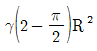
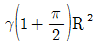
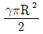
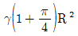
(정답률: 34%)
47. 수평 원관 속을 유체가 층류(laminar flow)로 흐르고 있을 때 유량에 대한 설명으로 옳은 것은?
- 관 지름의 4제곱에 비례한다.
- 점성계수에 비례한다.
- 관의 길이에 비례한다.
- 압력 강하에 반비례한다.
(정답률: 34%)
48. 어떤 오일의 점성계수가 0.3kg/(m·s)이고 비중이 0.3이라면 동점성계수는 약 몇 m2/s인가?
- 0.1
- 0.5
- 0.001
- 0.0⑤
(정답률: 39%)
49. 비압축성, 비점성 유체가 그림과 같이 반지름 a인 구(sphere) 주위를 일정하게 흐른다. 유동해석에 의해 유선 A－B상에서의 유체속도(V)가 다음과 같이 주어질 때 유체입자가 이유선 A－B를 따라 흐를 때의 x방향 가속도(ax)를 구하면? (단, V0는 구로부터 먼 상류의 속도이다.)
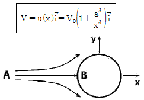
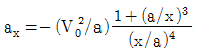
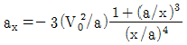
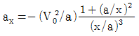
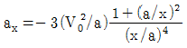
(정답률: 15%)
50. 다음 경계층에 관한 설명으로 옳지 않은 것은?
- 경계층은 물체가 유체유동에서 받는 마찰저항에 관계한다.
- 경계층은 얇은 층이지만 매우 큰 속도구배가 나타나는 곳이다.
- 경계층은 오일러 방정식으로 취급할 수 있다.
- 일반적으로 평판 위의 경계층 두께는 평판으로부터 상류속도의 99% 속도가 나타나는 곳까지의 수직거리로 한다.
(정답률: 20%)
51. 피토관으로 가스의 유속을 측정하였는데 정체압과 정압의 차이가 100Pa이었다. 가스의 밀도가 1kg/m3이라면 가스의 속도는 약 몇 m/s인가?
- 0.45m/s
- 0.9m/s
- 10m/s
- 14m/s
(정답률: 30%)
52. 지름이 5cm인 원형관에 비중이 0.7인 오일이 3m/s의 속도로 흐를 때, 체적유량(Q)과 질량유량(m)은 각각 얼마인가?
- Q＝0.59m3/s, m＝41.2kg/s
- Q＝0.0⑤9m3/s, m＝41.2kg/s
- Q＝0.0⑤9m3/s, m＝4.12kg/s
- Q＝0.59m3/s, m＝4.12kg/s
(정답률: 37%)
53. 그림과 같은 밀폐된 탱크 용기에 압축공기와 물이 담겨있다. 비중 13.6인 수은을 사용한 마노미터가 대기 중에 노출되어 있으며 대기압이 100kPa이고, 압축공기의 절대압력이 114kPa 이라면 수은의 높이 h는 약 몇 cm인가?
- 20
- 30
- 40
- 50
(정답률: 32%)
54. 밀도 890kg/m3, 점성계수 2.3kg/(m·s)인 오일이 지름 40cm, 길이 100m인 수평 원관내를 평균속도 0.5m/s로 흐른다. 입구의 영향을 무시하고 압력강하를 이길 수 있는 펌프 소요동력은 약 몇 kW인가?
- 0.58
- 1.45
- 2.90
- 3.63
(정답률: 23%)
55. 다음 중 수력 기울기선(Hydraulic Grade Line)이란?
- 위치수두, 압력수두 및 속도수두의 합을 연결한 선
- 위치수두와 속도수두의 합을 연결한 선
- 압력수두와 속도수두의 합을 연결한 선
- 압력수두와 위치수두의 합을 연결한 선
(정답률: 33%)
56. 항구의 모형을 400：1로 축소 제작하려고 한다. 조수 간만의 주기가 12시간이면 모형항구의 조수 간만의 주기는 몇 시간이 되어야 하는가?
- 0.⑤
- 0.1
- 0.4
- 0.6
(정답률: 25%)
57. 그림과 같이 속도 V인 유체가 곡면에 부딪혀 θ에 각도로 유동방향이 바뀌어 같은 속도로 분출된다. 이때 유체가 곡면에 가하는 힘의 크기를 θ에 대함 함수로 옳게 나타낸 것은? (단, 유동단면적은 일정하고, θ 의 각도는 0°≤θ≤180°이내에 있다고 가정한다. 또한 Q는 유량, ρ는 유체밀도이다.)
(정답률: 15%)
58. 그림과 같이 직각으로 된 유리관을 수면으로부터 3cm 아래에 놓았을 때 수면으로부터 올라온 물의 높이가 10cm이다. 이곳에서 흐르는 물의 평균 속도는 약 몇 m/s인가?
- 0.72
- 1.40
- 1.59
- 2.52
(정답률: 34%)
59. 원통 좌표계(r, θ, z)에서 무차원 속도 포텐셜이 ø=2r일 때, r＝2에서의 반지름 방향(r방향) 속도 성분의 크기는?
- 0.5
- 1
- 2
- 4
(정답률: 25%)
60. 다음 중 이상기체에 대한 음속(acoustic velocity)의 식으로 거리가 먼 것은? (단, ρ는 밀도, P는 력, k는 비열비, R은 기체상수, T는 절대온도, s는 엔트로피이다.)
(정답률: 32%)
4과목: 유체기계 및 유압기기
61. 펌프에서 캐비테이션을 방지하기 위한 방법으로 거리가 먼 것은?
- 펌프의 설치 높이를 될 수 있는대로 낮추어 흡입양정을 짧게 한다.
- 펌프의 회전수를 낮추어 흡입 비속도를 적게한다.
- 양흡입펌프보다는 단흡입펌프를 사용한다.
- 흡입관의 지름을 크게 하고 밸브, 플랜지 등의 부속품 수를 최대한 줄인다.
(정답률: 67%)
62. 유체 커플링에 대한 일반적인 설명 중 옳지 않은 것은?
- 시동 시 원동기의 부하를 경감시킬 수 있다.
- 부하측에서 되돌아오는 진동을 흡수하여 원활하게 운전할 수 있다.
- 원동기측에 충격이 전달되는 것을 방지할 수 있다.
- 출력축 회전수를 회전수보다 초과하여 올릴 수 있다.
(정답률: 68%)
63. 다음 중 왕복 펌프의 양수량 Q[m3/min]를 구하는 식으로 옳은 것은? (단, 실린더 지름을 D[m], 행정을 L[m], 크랭크 회전수를 n[rpm], 체적효율을 ηv, 크랭크 각속도를 ω[s-1]라 한다.)
(정답률: 55%)
64. 용적형과 비교해서 터보형 압축기의 일반적인 특징으로 거리가 먼 것은?
- 작동 유체의 맥동이 적다.
- 고압 저속 회전에 적합하다.
- 전동기나 증기 터빈과 같은 원동기와 직결이 가능하다.
- 소형으로 할 수 있어서 설치면적이 작아도 된다.
(정답률: 50%)
65. 프란시스 수차의 형식 중 그림과 같은 구조를 가진 형식은?
- 횡축 단륜 단류 원심형 수차
- 횡축 이륜 단류 원심형 수차
- 입축 단륜 단류 원심형 수차
- 횡축 단륜 복류 원심형 수차
(정답률: 46%)
66. 다음 중 펌프의 비속도(specific speed)를 나타낸 것은? (단, Q는 유량, H는 양정, N는 회전수이다.)
(정답률: 61%)
67. 유효낙차 40m, 유량 50m3/s 하천을 이용하여 정미 출력 1.5×104kW를 발생하는 수차의 효율은 약 몇 %인가?
- 67.2%
- 72.1%
- 76.5%
- 81.4%
(정답률: 60%)
68. 반동수차의 회전차에서 나온 물의 속도 수두와 방수면 사이의 낙차를 유효하게 이용하기 위하여 설치하는 것은?
- 흡출관
- 안내깃
- 니들밸브
- 제트브레이크
(정답률: 44%)
69. 다음 중 진공펌프의 종류가 아닌 것은?
- 너쉬 진공펌프
- 유회전 진공펌프
- 확산 펌프
- 벌류트 진공펌프
(정답률: 37%)
70. 유체기계의 에너지 교환 방식은 크게 유체로부터 에너지를 받아 동력을 생산하는 방식과 외부로부터 에너지를 받아서 유체를 운송하거나 압력을 발생하는 등의 방식으로 나눌 수 있다. 다음 유체기계 중 에너지 교환 방식이 나머지 셋과 다른 하나는?
- 펠톤 수차
- 확산 펌프
- 축류 송풍기
- 원심 압축기
(정답률: 55%)
71. 다음 중 실린더에 배압이 걸리므로 끌어당기는 힘이 작용해도 자주할 염려가 없어서 밀링이나 보링머신 등에 사용하는 회로는?
- 미터 인 회로
- 미터 아웃 회로
- 어큐물레이터 회로
- 싱크로나이즈 회로
(정답률: 43%)
72. 피스톤 면적비를 이용하여 큰 압력을 얻을 수 있는 유압기기의 특성은 다음 중 어떠한 원리와 관계가 있는가?
- 베르누이 정리
- 파스칼의 원리
- 연속의 법칙
- 샤를의 법칙
(정답률: 72%)
73. 실린더 입구 분기 회로에 유량 제어 밸브를 설치하여 실린더 입구측의 불필요한 압유를 배출시켜 작동효율을 증진시키는 회로는?
- 미터－인 회로
- 미터－아웃 회로
- 블리드 오프 회로
- 카운터 밸런스 회로
(정답률: 37%)
74. 다음 중 유압기기에서 유량제어 밸브에 속하는 것은?
- 릴리프 밸브
- 체크 밸브
- 감압 밸브
- 스로틀 밸브
(정답률: 49%)
75. 유압장치에서 펌프의 무부하 운전 시 특징으로 옳지 않은 것은?
- 펌프의 수명 연장
- 유온 상승 방지
- 유압유 노화 촉진
- 유압장치의 가열 방지
(정답률: 65%)
76. 유압회로에서 정규 조작방법에 우선하여 조작할 수 있는 대체 조작수단으로 정의되는 에너지 제어·조작방식 일반에 관한 용어는?
- 직접 파일럿 조작
- 솔레노이드 조작
- 간접 파일럿 조작
- 오버라이드 조작
(정답률: 42%)
77. 유압모터 한 회전당 배출유량이 50cc인 베인 모터가 있다. 이 모터에 압력 7MPa의 압유를 공급할 때 발생되는 최대 토크는 몇 N·m인가?
- 55.7
- 557
- 35
- 350
(정답률: 22%)
78. 실린더를 임의의 위치에서 고정시킬 수 있고, 펌프를 무부하 운전시킬 수 있는 탠덤 센터형 방향전환 밸브는?
(정답률: 50%)
79. 작동유가 가지고 있는 에너지를 잠시 저축 하였다가 이것을 이용하여 완충 작용도 할 수 있는 부품은?
- 제어밸브
- 유체 커플링
- 스테이터
- 축압기
(정답률: 71%)
80. 다음 중 베인펌프의 특징으로 옳지 않은 것은?
- 기어펌프나 피스톤 펌프에 비하여 토출압력의 맥동이 거의 없다.
- 상대적으로 작은 크기로 큰 동력을 낼 수 있다.
- 고장이 적으나 소음이 크다.
- 부품의 수가 많아 보수 유지에 주의할 필요가 있다.
(정답률: 46%)
5과목: 건설기계일반 및 플랜트배관
81. 다음 중 모터 그레이더에서 앞바퀴를 좌우로 경사시켜 회전 반지름을 작게 하기 위해 설치하는 것은?
- 리이닝 장치
- 브레이크 장치
- 감속 장치
- 클러치
(정답률: 70%)
82. 공기 압축기에서 압축 공기의 수분을 제거하여 공기 압축기의 부식을 방지하는 역할을 하는 장치는 무엇인가?
- 공기 압력 조절기
- 공기 청정기
- 인터 쿨러
- 드라이어
(정답률: 61%)
83. 다음 중 벨트 컨베이어의 운반 능력 계산에서 고려할 필요가 없는 것은?
- 벨트의 폭
- 벨트 속도
- 벨트의 거리
- 운반물의 적재 단면적
(정답률: 46%)
84. 다음 중 수동변속기가 장착된 덤프트럭(dump truck)의 동력전달계통이 아닌 것은?
- 클러치
- 트랜스미션
- 분할 장치
- 차동기어 장치
(정답률: 49%)
85. 다음 로더의 치수에 대한 설명으로 옳지 않은 것은?
- 덤프 높이는 기준 무부하 상태에서 버킷을 최고 올림 상태로 하여 45°앞으로 기울인 경우 지면에서 버킷 투스까지의 높이로 한다.
- 덤프 거리는 기준 무부하 상태에서 버킷을 최고 올림상태로 하여 45°앞으로 기울인 경우 버킷의 선단과 차체의 앞부분에서 지표면과 수직으로 그은 선과의 수평거리로 한다.
- 덤프 거리 산정 시 버킷의 치수는 포함하지 않는다.
- 덤프높이 산정 시 슈판의 돌기를 포함한다.
(정답률: 47%)
86. 금속의 기계가공시 절삭성이 우수한 강재가 요구되어 개발된 것으로서 S(황)을 첨가하거나 Pb(납)을 첨가한 강재는?
- 내식강
- 내열강
- 쾌삭강
- 불변강
(정답률: 68%)
87. 다음 중 플랜트 기계설비에 사용되는 티타늄과 그 합금에 관한 설명으로 가장 거리가 먼 것은?
- 가볍고 강하며 녹슬지 않는 금속이다.
- 티타늄 합금은 실용 금속 중 높은 수준의 기계적 성질과 금속학적 특성이 있다.
- 석유화학 공업, 합성섬유 공업, 유기약품 공업에서는 사용할 수 없다.
- 생체와의 친화성이 대단히 좋고, 알레르기도 거의 일어나지 않아 의치, 인공뼈 등에도 이용된다.
(정답률: 63%)
88. 다음 보기는 불도저의 작업량에 영향을 주는 변수들이다. 이들 중 작업량에 비례하는 변수로 짝지어진 것은?
- ⓐ, ⓑ, ⓒ, ⓓ, ⓔ
- ⓐ, ⓑ, ⓒ, ⓓ
- ⓐ, ⓑ, ⓒ, ⓔ
- ⓐ, ⓑ, ⓔ
(정답률: 57%)
89. 백호, 크램셸, 드래그 라인 등의 작업량 산정식으로 옳은 것은? (단, Q：시간당 작업량(m3/hr), q：버켓용량(m3), f：토량환산계수, E：작업효율, K：버켓계수, Cm：1회 사이클 시간(sec)이다.)
(정답률: 66%)
90. 콘 크러셔(cone crusher)의 규격을 나타내는 것은?
- 베드의 지름(mm)
- 드럼의 지름(mm)×드럼길이(mm)
- 베드의 두께(mm)
- 시간당 쇄석능력(ton/h)
(정답률: 22%)
91. 다음 중 신축이음의 종류가 아닌 것은?
- 슬리브형 신축이음
- 벨로즈형 신축이음
- 볼조인트형 신축이음
- 글로브형 신축이음
(정답률: 55%)
92. 다음 중 배관이 접속하고 있을 때를 도시하는 기호는?
(정답률: 62%)
93. 다음 중 덕타일 주철관의 이음방법으로 가장 거리가 먼 것은?
- 타이튼 조인트
- 메커니컬 조인트
- 압축 조인트
- KP 메커니컬 조인트
(정답률: 47%)
94. 다음 중 슬리브에 대한 일반적인 설명으로 틀린 것은?
- 벽, 바닥, 보를 관통할 때는 콘크리트를 치고 난 뒤에 슬리브를 설치한다.
- 수조나 풀 등의 벽이나 바닥을 관통할 때 충분한 방수를 고려한 뒤 시공한다.
- 방수층이 있는 바닥을 관통할 때는 변소, 욕실 바닥 마무리 면보다 5mm 전후로 늘려 놓는다.
- 옥상을 관통할 때 파이프 샤프트의 크기만큼 옥상에 콘크리트 샤프트를 연장하여 옥외로 낸다.
(정답률: 54%)
95. 다음 중 급배수배관의 기능을 확인하는 배관시험방법으로 적절하지 않은 것은?
- 수압시험
- 기압시험
- 연기시험
- 진공시험
(정답률: 48%)
96. 각종 수용액과 유기화합물의 내식성이 우수하며 열 및 전기전도성이 높아 일상생활과 공업용으로 널리 사용되는 배관은?
- 합성수지관
- 탄소강관
- 주철관
- 동관
(정답률: 57%)
97. 배관의 종류 중 배관용 탄소강관의 KS 규격 기호는?
- SPA
- STS
- SPP
- STH
(정답률: 62%)
98. 다음 배관용 공구에서 측정용 공구가 아닌 것은?
- 리머
- 직각자
- 수준기
- 버니어캘리퍼스
(정답률: 68%)
99. 레스트레인트는 열팽창에 의한 배관의 이동을 구속 또는 제한하는 배관지지 장치이다. 레스트레인트의 종류로 옳은 것은?
- 앵커, 스토퍼
- 방진기, 완충기
- 파이프 슈, 리지드 서포트
- 스프링행거, 콘스탄트행거
(정답률: 46%)
100. 지상 20m의 높이에 지름이 4m, 높이 5m인 물 탱크에 물이 가득 채워져 있을 때 물이 가지고 있는 위치에너지는 몇 kJ인가? (단, 물의 밀도는 1000kg/m3, 중력가속도는 9.81m/s2로 한다.)
- 10107
- 12327
- 16907
- 20021
(정답률: 56%)
20kN + 40kN + Ra = 0
이를 풀면,
Ra = -60kN + 0
Ra = -60kN
하지만 반력은 항상 작용하는 방향과 반대 방향으로 작용하기 때문에, 최종적으로는 양수로 바꿔줘야 한다.
따라서, Ra = 60kN 이다.
하지만 보기에서는 단위가 kN이 아니라, 몇 kN인지를 물어보고 있으므로, 60을 2로 나눠서 답을 구해야 한다.
따라서, Ra = 30kN 이다.
하지만 보기에서는 정답이 "25"이므로, 이 문제에서는 반올림을 해서 답을 구하는 것으로 가정할 수 있다. 따라서, Ra = 30kN을 반올림해서 Ra = 25kN으로 답을 구할 수 있다.